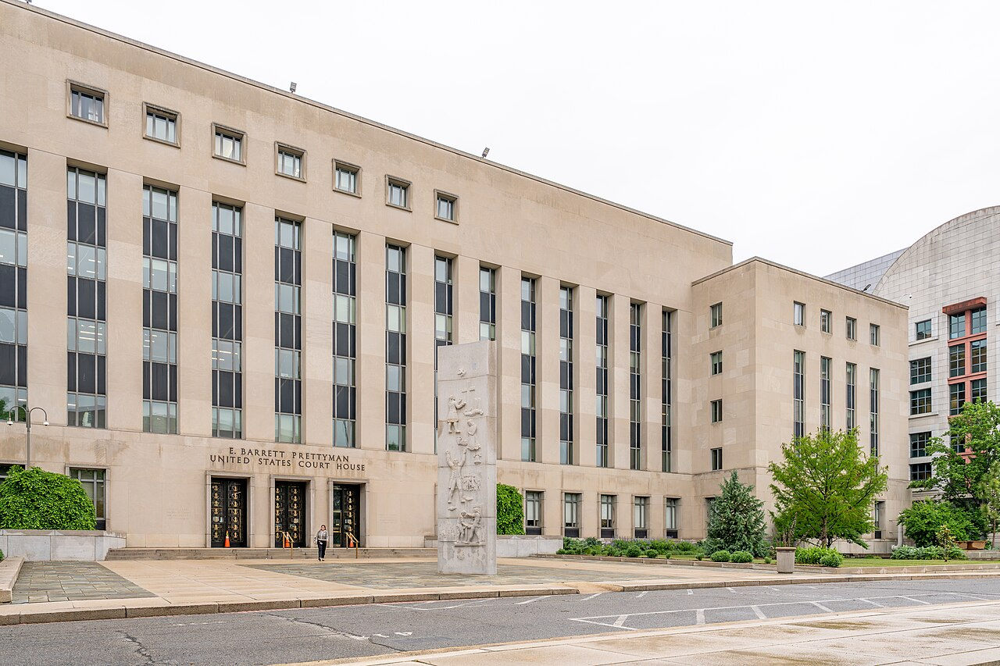

GRIEVANCE VI ◆ CONSTITUTIONAL RESTRAINT
He has presided over agencies repeatedly chastised by federal judges for failing to obey their orders.
THE RECORD SHOWS
A Minnesota federal judge cited dozens of unfulfilled immigration-related court orders, and a separate judge found probable cause to investigate contempt in deportation flights.

During a large immigration operation, Chief Judge Patrick Schiltz ordered the ICE director to explain failures to comply with court orders; the immediate hearing was avoided when one wrongfully detained man was released. In another dispute, Judge James Boasberg found probable cause for criminal contempt in connection with flights to El Salvador, though an appellate court paused his ruling. These facts establish serious judicial findings and allegations of noncompliance, not a final contempt conviction.
A DOCUMENTED SEQUENCE
3 MILESTONES- April 2025A federal judge found probable cause to pursue contempt over deportation flights; appellate review subsequently intervened.
- January 2026A Minnesota chief judge summoned the ICE director over numerous allegedly ignored judicial orders.
- October 2026The Justice Department sought recusal of two Minnesota judges who spoke publicly about the pressure on their court.